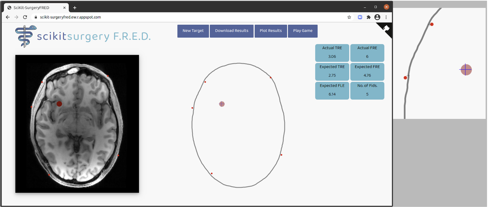
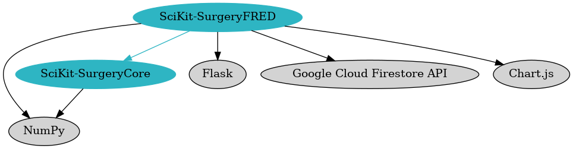

Medical Imaging 2021: Image-Guided Procedures, Robotic Interventions, and Modeling, edited by Cristian A. Linte, Jeffrey H. Siewerdsen, Proc. of SPIE Vol. 11598, 115980U © 2021 SPIE · doi: 10.1117/12.2580159
Understanding the relationship between fiducial registration error (FRE) and target registration error (TRE) is important for the correct use of interventional guidance systems. Whilst it is well established that TRE is statistically independent of FRE, system users still struggle against the intuitive assumption that a low FRE indicates a low TRE. We present the SciKit-Surgery Fiducial Registration Educational Demonstrator and describe its use. SciKit-SurgeryFRED was developed to enable remote teaching of key concepts in image registration. SciKit-SurgeryFRED also supports research into user interface design for image registration systems.
SciKit-SurgeryFRED can be used to enable remote tutorials covering the statistics relevant to image guided interventions. Students are able to place fiducial markers on pre and intra-operative images and observe the effects of changes in marker geometry, marker count, and fiducial localisation error on TRE and FRE. SciKit-SurgeryFRED also calculates statistical measures for the expected values of TRE and FRE. Because many registrations can be performed quickly the students can then explore potential correlations between the different statistics.
SciKit-SurgeryFRED also implements a registration based game, where participants are rewarded for complete treatment of a clinical target, whilst minimising the treatment margin. We used this game to perform a remote study on registration and simulated ablation, measuring how user performance changes depending on what error statistics are made available. The results support the assumption that knowing the exact value of target registration error leads to better treatment. Display of other statistics did not have a significant impact on the treatment performance.
1.
The fact that fiducial registration error (FRE) is uncorrelated with target registration error (TRE) is well established.? In spite of this, many students and users of clinical guidance systems struggle to correctly interpret FRE and residual errors in general. SciKit-SurgeryFRED (Fiducial Registration Educational Demonstrator)? was developed using the SciKit-Surgery? libraries to probe the causes of misconceptions about FRE and TRE. SciKit-SurgeryFRED supports online learning and provides tools to enable research into user interface design for image guidance systems.
Faced with the need to deliver teaching and research remotely during 2020’s SARS-CoV-2? travel restrictions, we developed a new online tutorial1 on fiducial based registration. The tutorial utilises SciKit-SurgeryFRED which is now implemented as a browser based web-app. SciKit-SurgeryFRED can be accessed on-line2 or deployed locally. Rather than simply telling the students that FRE is uncorrelated with TRE we decided it would be more effective to use divergent questioning strategies? within the application, analysis, synthesis and evaluation levels of Bloom’s taxonomy:? hence the question posed within the title of this paper.
We also took the opportunity to develop a serious game based on SciKit-SurgeryFRED. Serious games are games designed to be engaging to play, whilst setting out to achieve an objective beyond pure entertainment. In the case of SciKit-SurgeryFRED, the objective is to gather data on how clinical decision making might be influenced by the communication of registration errors. Serious games have significant potential as a training tool for clinicians.?,? Serious games have also been shown to be useful in assessing the usability of human computer interfaces,? which is of particular relevance to computer aided surgery. The results of the game indicate that the choice of error statistic shown can affect clinical decision making.
In this paper we introduce the SciKit-SurgeryFRED application and show how it can be used as an educational tool and to perform studies to measure registration and ablation performance. By default SciKit-SurgeryFRED implements fiducial localisation error (FLE) as an isotropic, normally distributed, independent variable. In this paper we show how SciKit-SurgeryFRED can be modified to implement anisotropic and systematic errors, and present the results of these modifications. It is our plan to build on the software to perform larger studies; to investigate more realistic models of FLE; to investigate other registration approaches; and other ways of communicating registration error. SciKit-SurgeryFRED is entirely open source software and we encourage researchers and educators to use and contribute to it. 2.
SciKit-SurgeryFRED implements a minimal user interface, Figure 1, to demonstrate registration of a pre-operative image to intra-operative space. At startup a target is placed at a random location within the pre-operative image, shown as a red circle. The standard deviation of the FLE is randomly sampled from a uniform distribution between 0.5 and 5.0 pixels 3 . By default the FLE is modelled as an isotropic (in 3 dimensions), normally distributed, and independent random variable, though this can be easily changed. The variance of the FLE is shown to the right of the intra-operative image (as expected value), along with the number of fiducial markers.

Clicking either image adds a fiducial marker to both images. By default the marker is added to the pre-operative image with no FLE. FLE is added to the marker location in the intra-operative image, visualised as the misalignment between the red circle centre and the cross-hair. Once sufficient markers are placed (> 2) the two sets of markers are registered using least squares fitting as described by Arun et al.? The expected values (variance) of the FRE and TRE are calculated using equations described by Fitzpatrick et al.? The student can use this interface together with an online tutorial to explore the relationships between the various statistics and error measures. The user can keep adding as many fiducial markers as they like for a given target. Pressing the “New Target” button will place a new target at a random position within the pre-operative image and randomly sample a new standard deviation for the FLE.
It is straightforward to explore how both TRE and FRE change in response to both the number and geometry of the fiducial markers as is well established in the literature.?,? It is also simple and instructive to create degenerate marker geometries, for example a linear arrangement can produce low FRE but extreme values of TRE.
During use the registration results are stored in the browser. At any time the user can press the “Plot Results” button to quickly create a set of plots showing the relationship between the actual TRE and the various statistics. An example plot is shown in Figure 2. The student is usually able to see first hand that, as expected, FRE is uncorrelated with TRE.
SciKit-SurgeryFRED does not implement tests of statistical significance to avoid excessive software dependencies, so it is often useful for the students to download the registration results and perform some statistical analysis. This is facilitated by the “Download Results” button which allows the user to get the results as a file in comma separated variable format. For example the results in Figure 2 may prompt some students to ask if there is in fact a correlation between FRE and TRE, as there is an apparent though slight increase in TRE with FRE. This can quickly be dispelled by asking the student to download the results and perform a test of significance on the data. 2.1
Once the students have an understanding of what statistics can be used to estimate TRE, we wanted to test how knowledge of a particular statistic affects optimal treatment planning. We designed a serious game to do this. During this game the students are asked to perform a registration with a maximum of 6 fiducial markers, then set a treatment margin and ablate the target. The goal is to treat 100% of the target with minimal ablation of surrounding tissue. A score of 1000 was awarded for complete ablation and 0 for anything less. From this starting score 10 times the percentage volume of any surrounding tissues ablated is subtracted. Successful treatments (100% ablation) should therefore score between 0 and 1000, with a larger margin giving a lower score. The optimum (minimum successful) treatment margin is the actual TRE for a given registration. Any treatment that fails to treat 100% of the target will receive a negative score.
Each student participated in the game, performing 20 simulated ablations. For the first four ablations they were told the actual TRE for training and to supply baseline data. After that they performed 16 more ablations and were shown one of four randomly selected statistics on which to base their decision, the expected values of the TRE/FRE, the actual FRE, the expected value of the FLE. These statistics were chosen as these are either known or can be estimated for a clinical procedure. Each statistic was shown 4 times, though the order was randomised for each participant. The scores for each ablation were recorded, yielding 20 data points for each participant.
2.2
SciKit-SurgeryFRED is part of the SciKit-Surgery? family of libraries. In common with SciKit-Surgery the majority of SciKit-SurgeryFRED is implemented in Python. Python was chosen as it combines sufficient features for clinical applications such as the SmartLiver system,? whilst remaining easy enough for students to learn and contribute to. In contrast, although platforms built using C++ provide power and flexibility, the choice of language creates a barrier to learning the key concepts of image guided surgery.? A key design goal of SciKit-Surgery is to keep individual libraries compact and orthogonal,? simplifying dependency structures. Based on analysis using cloc4 SciKit-SurgeryFRED consists of 1479 lines of Python code. The user interface is implemented in HTML5 and JavaScript, enabling multiple simple deployment options. Again, using cloc, there are 957 lines of HTML5 and JavaScript. These numbers are similar to the other SciKit-Surgery libraries which typically have around 2000 lines of code.?
Figure 3 shows the direct dependencies of SciKit-SurgeryFRED. The key functional dependency is SciKit-SurgeryCore.? SciKit-SurgeryCore implements matched point based registration? together with the calculation of expected FLE and TRE (equations 10 and 31 from Fitzpatrick et al.?). NumPy? is used for array handling. Flask5 provides the web application framework to enable the browser based user interface to communicate with the Python based back end. The user interface communicates with the back end with a series of POST requests. All state information is stored in the browser front end, allowing the back end to remain stateless, simplifying deployment. Including the Google Cloud FireStore API6 enables the optional storage of results in a remotely hosted database. Plotting functionality is implemented using Chart.js7

In common with the rest of SciKit-Surgery SciKit-SurgeryFRED utilises extensive testing and software process? to ensure the application is robust, reusable, and sustainable.? Change control and issue tracking is managed on GitHub8 and continuous integration is managed using GitHub Actions. 2.3
For those who want to quickly try SciKit-SurgeryFRED, we currently maintain a running instance hosted at https://scikit-surgeryfred.ew.r.appspot.com/. This should be accessible from most modern web browsers.
If you want to run a locally hosted instance, or modify the code for your needs, you can download the source code. SciKit-SurgeryFRED is entirely open source software and is tested on Linux, MacOS, and Windows. The latest version can be obtained from Github. Alternatively, archived releases can be retrieved via Zenodo.?
Once installed the dependencies can be installed on a local virtual machine using tox. The application can then be run with as follows. This should output a web address that you can open in a browser to run the software.
2.4
In many cases FLE cannot be properly modelled as an isotropic, independent, random variable. In the case of optical tracking systems for example? the errors normal to the camera plane are approximately 3 times those parallel to the camera plane. It is straightforward to implement such an anisotropic FLE in SciKit-SurgeryFRED and test the effect on registration outcomes. The following code snippet is taken from main.py. Line 66 defines the ratio of FLE in three directions. By default they are all equal.
Changing line 66 to;
sets the error in the x direction to 3 times that in the y and z directions.
2.5
A second significant source of error that is usually overlooked is the presence of systematic errors. For example when using a tracked pointer for fiducial localisation, any pointer calibration error will be be added to all fiducial markers. Similarly some optical tracking systems can introduce a systematic error on the tracking markers.? SciKit-SurgeryFRED allows systematic error to be added to each fiducial. The fiducial localisation error is set within the JavaScript function init_fles() (defined in static/main.js) each time a new target is set.
By default there is no systematic error, (lines 512 and 513). We can add a systematic interoperative error at line 513 as;
In this case the error is an isotropic uniform random variable, in the range -0.5 to 0.5. This error will be applied to all fiducial markers for a given registration.
3.
3.1
SciKit-SurgeryFRED (v0.0.3)? was used at our Medical Summer School in 2020 with a cohort of 5 students. Informal feedback indicated that it had improved their understanding of fiducial based registration. SciKit-SurgeryFRED also forms part of the basic augmented reality demonstration (BARD) which was a finalist at the MICCAI 2020 educational challenge 9 . 3.2
We simulated an anisotropic independent FLE, with FLE in the x direction being 3 times that in the y and z, as described in Section 2.4. Errors were scaled so that the expected absolute value of the FLE was the same as for the isotropic case. SciKit-SurgeryFRED was then used to perform at least 200 simulated registrations, the results of which are shown in Fig. 4.
It was apparent when performing the registrations that the majority of target registration error was in the x direction. However this is not communicated in the statistics of Figure 4. It would be an interesting extension exercise to use SciKit-SurgeryFRED to explore ways of communicating anisotropic errors during treatment. 3.3
We added a systematic FLE as an isotropic uniform random variable, in the range -0.5 to 0.5, as described in
Section 2.5. This error will be applied to all fiducial markers for a given registration. We performed at
least 200 simulated registrations using SciKit-SurgeryFRED, the results of which are shown in Fig. 5.
It is noticeable that average TREs are higher than in cases where there is no systematic error, while FRE remains similar. This is as expected as FRE will not account for systematic errors. This is a useful demonstration of this effect, though it might be more instructive to implement systematic errors in the game based method, see Section 2.1, to investigate the likely clinical impact of these systematic errors. 3.4
As discussed in Section 2 it is useful to perform tests of statistical significance on SciKit-SurgeryFRED’s registration results. We used the function stats.linregress from SciPy? to perform a Wald Test against the null hypothesis that the slope is zero. For the results shown in Figures 2, 4, and 5 there was no significant relationship between actual TRE and either actual or expected FRE. There was a significant relationship between actual TRE and the expected TRE. All of these results are as expected.
Tests against the expected value of FLE and the number of fiducial markers are more problematic, as they are not continuous variables, which should be apparent when looking at the results charts. The reason for this is obvious for the number of fiducial markers. The expected value of FLE is clustered into groups as this is only set once for a given target, however the registration for this target will be repeated each time a new fiducial marker is added beyond the minimum of 3. Hence if the user adds a total of 10 fiducial markers, this will create 8 registration results all with different TRE and FRE, but with a single value of expected FLE.
3.5
The results of the game based study described in Section 2.1 are shown in Figure 6. As expected scores are highest when the actual TRE is known. Interestingly it appears that when told only the expected value of the FLE the students tended to under treat the target more, resulting in lower overall scores.
The statistical significance of the results was tested using a two sided, unpaired, T-test implemented in SciPy’s? stats.ttest_ind function. Using a p-value of 0.05 none of the results were statistically significant. Currently there are only 100 data points (20 for each category), so this is not surprising. 4.
SciKit-SurgeryFRED has proven useful for the teaching of fiducial based registration, though more work on usability and measurement of teaching outcomes would be helpful. The results of the simulated ablation study are also of interest, however more participants are needed before any firm conclusions can be drawn. If we assume that additional data follow the same pattern as observed to date we would need to run the game on a further 15 subjects to show statistical significance on the difference in scores when using actual TRE. In the case of the FLE we would need a further 30 participants. Given the ease with which SciKit-SurgeryFRED can be deployed and used we hope to achieve this in the near future.
Currently SciKit-SurgeryFRED implements numerical measures for registration errors, however in practice it may be better to use graphical representations of registration error. An example is the use of outline rendering to show the misalignment of anatomical edges during keyhole surgery.? Azimi et al.? provide a similar example of a neuro-surgical guidance system where the registration error is communicated to the surgeon via misalignment of external anatomy. Such a method could be relatively easily implemented in SciKit-SurgeryFRED, with gamification used to measure its effectiveness.
Currently SciKit-SurgeryFRED is limited to rigid registration using point correspondence, however, there is no architectural reason why it could not be used to examine the effects of registration uncertainty more generally. It may be useful to implement more general error prediction models for rigid registrations.?,?
Surface based registration has long been proposed as a way to improve registration accuracy for neurosurgery? and is is now integrated into commercial systems with mixed results.? SciKit-SurgeryFRED could be extended to include different registration methods, though obviously would require a more inclusive name. As we move to non rigid and probabilistic registrations, the correct interpretation of registration uncertainty will become more challenging.?
5.
Understanding registration uncertainty is essential for the correct use of image guided surgery. There is, however, a lack of tools to aid teaching and research. We have presented SciKit-SurgeryFRED and demonstrated its use for teaching and research. SciKit-SurgeryFRED’s ease of use enables it be deployed and demonstrated rapidly. SciKit-SurgeryFRED is open source and readily available so researchers and educators can modify and apply SciKit-SurgeryFRED based on their specific requirements.
6.
This research was funded in whole, or in part, by the Wellcome Trust [203145Z/16/Z]. For the purpose of Open Access, the author has applied a CC BY public copyright licence to any Author Accepted Manuscript version arising from this submission. The registration data described in Sections 2 and 3 can be downloaded from https://doi.org/10.5281/zenodo.4434278.
7.
This work is supported by the Wellcome/EPSRC Centre for Interventional and Surgical Sciences (WEISS) [203145Z/16/Z]. Our thanks to Simone Foti for designing the SciKit-Surgery logo, and to Dr Mary Thompson for proof reading the manuscript.